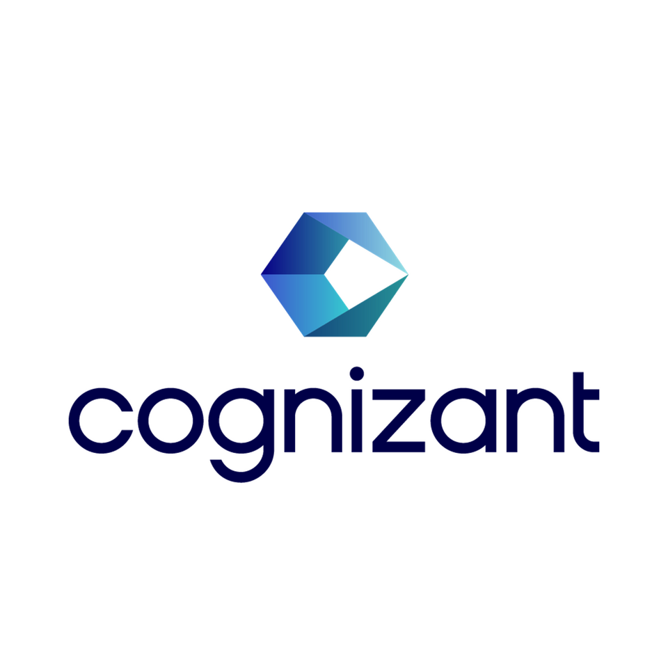

Principal Architect – Data, AI/ML & GenAI
Driving enterprise-scale AI & GenAI adoption and $350M+ in GTM pipeline for Fortune 500 companies
About Me
Accomplished Principal Architect with 25 years of experience driving enterprise-scale AI/ML and GenAI, data, and cloud transformations for Fortune 500 companies.
I specialize in designing and scaling production-grade AI platforms on AWS, combining modern data architecture, AI/ML, and strong data governance to enable enterprise adoption. I partner closely with C-suite executives and senior leaders to align AI initiatives with business strategy, GTM priorities, and measurable outcomes.
Throughout my career, I've led and mentored high-performing teams while driving innovation, revenue growth, and operational excellence. My expertise spans Enterprise Architecture, AI & GenAI Solution Design, Technical Product & GTM Strategy, and Executive Advisory.
Professional Experience
 Amazon Web Services
Amazon Web Services
Principal Architect – Data, AI/ML & GenAI | Apr 2019 – Present | Atlanta, GA
- Technical lead for enterprise GTM motions across AI/ML, GenAI, and analytics, influencing $350M+ in pipeline with 40% conversion to active launches
- Led executive-level architecture workshops, roadmap definition, and technical win strategies for Fortune 500 customers, accelerating AI adoption and cloud transformation
- Designed and validated production-grade reference architectures for data platforms, MLOps, and GenAI solutions adopted across multiple customer accounts
- Recognized technical thought leader with 25+ re:Invent & Summit talks, AWS Architecture Blog contributor, and 100,000+ content views across speaking engagements and technical publications
 JP Morgan Chase
JP Morgan Chase
Data & ML Architect | Sep 2016 – Apr 2019 | Jersey City, NJ
- Architected and led the transformation of enterprise Risk & Finance data & ML platform, enabling real-time analytics and ML-driven insights for C-suite decision making
- Led the modernization from legacy systems (Informatica/Sybase) to a cloud-based scalable Big Data architecture using Hadoop ecosystem
 Credit Suisse
Credit Suisse
Data & ML Architect | Aug 2012 – Sep 2016 | New York, NY
- Led the architectural transformation of Private Banking data platform, implementing real-time data processing and predictive analytics for wealth management
- Architected data pipeline, delivering automated client insights, portfolio recommendations, and risk analytics
Cognizant Technology Solutions
Solution Architect | Feb 2007 – Jul 2012 | New York, NY & Chicago, IL
Client: JP Morgan Chase & Northern Trust
- Solutions Architect specializing in enterprise data & ML platforms, implementing automated financial analytics and risk management solutions
- Created ULEI (Unique Legal Entity Identifier) MDM platform that consolidated credit and risk exposure across customer entities for BASEL regulatory compliance, saving millions in credit risk portfolio management
Accenture
Senior Software Engineer | Apr 2004 – Jan 2007 | Houston, TX
Client: Exxon Mobil
- Led enterprise application modernization at ExxonMobil, transforming legacy systems to scalable, modern architecture
- Implemented automated deployment pipelines and enhanced system monitoring for improved operational efficiency
Cognizant Technology Solutions
Programmer Analyst | Aug 2000 – Mar 2004 | Melville, NY
Client: First Data Merchant System
- Architected and delivered SCRS (Sales Commission Reporting System), an enterprise platform that automated sales compensation management and analytics
Key Initiatives & Solutions
Workshops
Advanced RAG Applications Workshop
Hands-on workshop building enterprise-grade RAG applications with Amazon Bedrock, SageMaker, and OpenSearch. Master chunking strategies, metadata filtering, guardrails, reranking, and natural language to SQL for optimal retrieval accuracy and secure responses. Integrate structured data sources with Knowledge Bases.
Building Effective AI Agents on AWS
Comprehensive workshop on building autonomous AI agent systems for complex tasks. Master foundational LLM patterns with tools and retrieval, implement agentic workflows, and choose frameworks (Strands, CrewAI, LangChain, LangGraph). Learn to monitor, optimize, and apply agent patterns to real-world use cases.
Getting started with Bedrock AgentCore
Comprehensive workshop on Amazon Bedrock AgentCore, a fully managed service for deploying AI agents securely at scale. Build a production-ready Customer Support Agent with conversational AI, memory, security, and observability. Handle complex workflows, integrate enterprise systems, and scale to thousands of customers.
Building Production-Ready Apps with Amazon Bedrock
Advanced workshop building enterprise-grade AI applications with Amazon Bedrock and Claude. Master prompt engineering, implement RAG and Agentic AI using Strands, apply guardrails for responsible AI, deploy scalable solutions with AgentCore, and optimize costs. Build secure, scalable, cost-effective AI solutions for enterprise deployment.
Business Impact
Through technical GTM motions and solution-led workshops
Opportunities progressing from pipeline to production deployment
Enabled field teams on Bedrock and enterprise-scale GenAI adoption
Across blogs, videos, and speaking engagements
AWS re:Invent & Summit talks driving thought leadership
Stars with 68 forks, 500+ clones, 5,000+ visitors
Across various career stages and roles
Legend Award, Hackathon Wins, Gartner Finalist
Thought Leadership
🎤 Speaking & Content
- 25+ public talks and 100+ internal AWS forums
- Key sessions at AWS re:Invent and multiple AWS Summits
- Featured talks:
- Build production-ready AI solutions with Claude in Amazon Bedrock
- Mastering AI Agents: Building Production-Ready Applications
- Unleashing the Power of AI Agents to Transform Your Business
- Building AI Agents with OSS & Strands using Bedrock & SageMaker
- Executive Forum in Palo Alto, CA - DevGenius Showcase
- Build Production-Ready Advanced RAG & Agents
- Advanced RAG & Agents using Amazon Bedrock & Amazon SageMaker
- Building Agents using CrewAI with DeepSeek and Amazon Nova models
- Intellilearn - Transforming the learning experience
- Data platform innovation at scale
- 30+ technical videos on AWS AI & Data platforms
- 100,000+ views across speaking engagements, blogs, and videos
✍️ Published Works
AWS Blog Articles
Amazon Bedrock AgentCore Series
👥 Mentorship & Talent
- Key member of Data & AI Leadership Council
- Led teams of 15-20 members across multiple projects:
- Data platforms for Northern Trust, JPMC, Prudential, and Wells Fargo
- AI applications for Toyota, Cornell University, Chewy, and Jabil
- Mentoring 30+ professionals across various career stages
- Contributed to 30+ hiring pods
- Conducted 150+ interviews for AWS talent acquisition
🏆 Awards & Recognition
- Finalist 2025 AI Hackathon - OptiX AI solution
- 2024 AWS Legend Award - One of 60 exceptional builders from 130,000 across Sales, Marketing, and Global Services
- Runner-up 2024 AI Hackathon - DevGenius solution
- Winner 2023 AI Hackathon - MetaSurfer platform
- Finalist 2022 Gartner Eye on Innovation Award - Atomix framework
- 2022 Customer Obsession LP Award
- 2021 Bias for Action LP Award
Education & Certifications
🎓 Education
Masters in Computer Applications
Bharathidasan University, Trichy, India | April 2003
Bachelors in Physics (Gold Medalist)
University of Madras, Chennai, India | April 2000
📜 AWS Certifications
🏅 Other Certifications
Technical Skills
Core Competency
AWS Cloud Services
GenAI & LLMs
GenAI Applications
Big Data & Programming
Get in Touch
I'm always interested in discussing AI/ML transformations, enterprise architecture, and strategic technology initiatives.